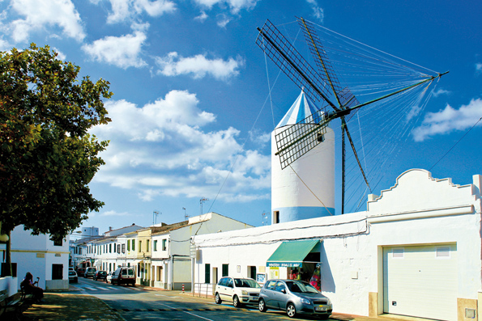
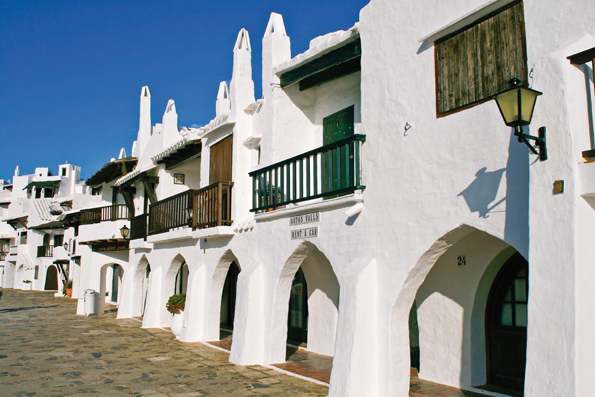
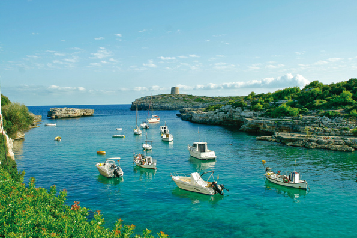

САН ЛУИС, французское происхождение
Менорка всегда была землей, привлекавшей самые разные культуры и цивилизации, и каждая из них оставила на острове свой след. На протяжении семи лет, в период с 1756 по 1763 г., Менорка была французской, и главное наследие того периода городок Сан Луис. Основанный в честь короля Луи XV, город построен по принятым в то время правилам прямолинейной планировки: простые прямые улицы и сегодня формируют центр города. Центральная из них – эль Кос (el Cós), сохранившая свою важность и являющаяся торговой артерией.
Сан Луис с населением чуть больше 7.500 человек находится на востоке острова. В облике города примечательна мельница де Дальт (Molí de Dalt) – одна из трех, что существовали здесь еще два века назад. На горизонте skyline Сан Луиса крылья этой мельницы, заслуженно занимают особое место. Де Дальт – сохранившееся лучше других символическое здание с бело-голубой черепицей, являющееся, без сомнения, фирменным знаком города. Его величественная фигура на фоне голубого неба дружески встретит вас на подъезде сюда со стороны Маона. Воспользуйтесь случаем и посетите этнологический музей, расположенный на первом этаже.
Также советуем вам зайти в церковь. Ее здание в неоклассическом стиле, тоже построенное во время французского господства, – еще один символ города, который, не скрывая галльских корней, следует современному течению времени и показывает себя с лучшей стороны.
Сан Луис – одно из самых туристических мест на Менорке, чем он обязан своему привилегированному расположению. Эта земля, омываемая Средиземным морем с юга и востока, не поскупилась на пляжи и бухты, райские уголки, где образовались маленькие туристические поселки, красивые и удобные. Его очарование настолько сильно, что многие, приехавшие на время, обосновывались здесь навсегда, околдованные белым песком и кристальной водой.
Бинибека (Binibeca) – одна из причин, объясняющих притягательность Сан Луиса. Превратившись из рыбацкой деревушки в туристическую, в ней и по сей день витает дух волшебства. Узкие улочки, проложенные между белоснежными домиками, увековечены на тысячах фотографий. Вы также не устоите перед ее обаянием. В этом есть логика: если соединить абсолютно средиземноморские пейзажи и шепот волн, буквально пробивающихся между домами, не останется сомнений – Бинибека – это нечто особенное.
В Сан Луис много других бухт и интересных уголков. Уникальные места, которые сочетают в себе туристическую направленность и меноркинский дух. Бухта Алькауфар (Cala Alcaufar), например, полная аутентичности, возникла как рыбацкий анклав и место летнего отдыха островитян. Бинианкойа (Biniancolla) – еще одно место сто процентной Менорки, где хранят традиции жизни у моря, и кроме того это идеальный уголок для желающих исследовать морское дно. Бинисафуа (Binissafúller), Кап ден Фонт (Cap den Font), Сон Ганчо (Son Ganxo)... – по сути, они похожи, но каждое со своим характером. Рекомендуем вам в этом убедиться.
Пунта Прима (Punta Prima) – пляж, который лучше всего подойдет для семейного отдыха. Мягкий песок и мелкая вода – идеальное сочетание для путешествующих с детьми. Лежа на песке и глядя на горизонт, вы увидите, как из моря поднимается силуэт островка. Это Воздушный остров (Illa de l'Aire), особый анклав, подходящий для обитания симпатичных и уникальных во всем мире черных балеарских ящериц, которые адаптировались на этом кусочке в 30 га земли, отрезанном морем и увенчанным маяком.
Если вы хотите увидеть пейзаж, от которого перехватывает дыхание, побывайте в Рафалет (Cala Rafalet). Эта маленькая бухта ютится между двумя скалистыми утесами. Вода настолько чистая, что не окунуться в нее невозможно. И конечно, решив побывать в этом месте, забудьте о спешке. Так далеко от мирского шума остается только увлечься пейзажем, слиться с природой и дышать, просто дышать полной грудью.
Сан Луис можно и нужно осматривать пешком. От исторического центра расходятся дороги, вдоль которых можно увидеть традиционные жилые дома, некогда рассредоточенные, пока французы не объединили их в один муниципалитет. Также можно увидеть разные этнологические памятники: талайот Эс Пужоль (Es Pujol) или смотровую башню Талайа де Торрет (Talaia de Torret). Поищите информацию об этих маршрутах. В Сан Луисе больше интересного, чем вы могли бы себе представить.
Этот город встречает своих гостей с распростертыми объятиями. Главная составляющая доходов округа – именно туризм, а задача – тепло принять путешественников и, предоставив хороший сервис, сделать их пребывание максимально приятным.
Если вы попадете сюда в конце августа, не пропустите местные праздники. 25 августа (или ближайшие выходные, если 25-е рабочий день) город предается традиционным весельям и заполняется лошадьми. Как и на всех празднованиях дней Святых покровителей на Менорке, Сан Луисе окунается в магию музыки, всадников 'caixers' и их, встающих на дыбы, скакунов. Есть здесь и своя особая традиция – парад украшенных повозок, посмотреть на которые собираются сотни людей. По возможности, загляните.
Быть на Менорке и не посетить Сан Луис было бы большим упущением. Побывайте в его бухтах, посетите центр города и познакомьтесь с этнологическим наследием. Сан Луис – обязательный пункт в вашем путешествии по острову.